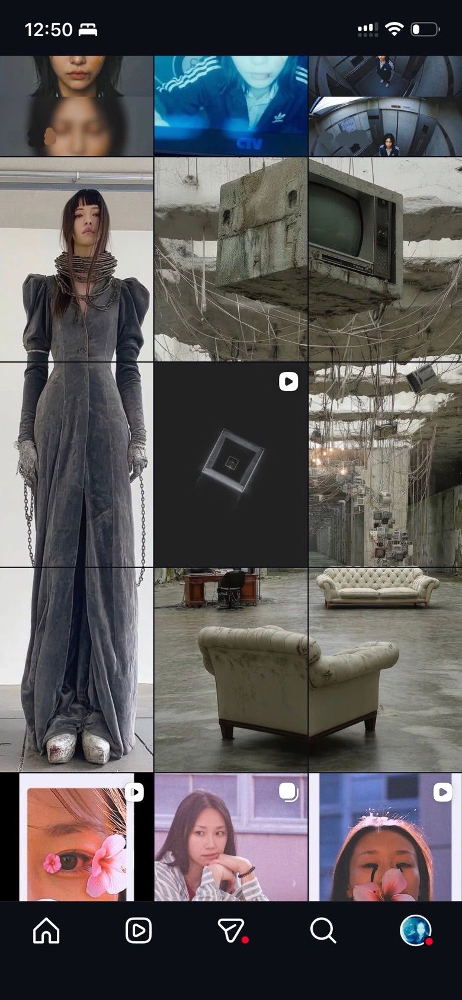

Image / artist reveal
She’s Back
A comeback announced as a three-act trailer, then folded into the one surface the audience actually opens: the artist’s own feed.
- Year
- 2025
- Kind
- Image
- Role
- Concept, art direction, generative production
- Frames
- 9:16 reel, 1:1 tiles, 3×3 grid composition
The format problem
Nine squares, one figure.
A profile grid is usually treated as nine unrelated posts. Here it is treated as one canvas: the figure is composed at grid scale first, then cut into tiles that each still hold on their own.


Structure
Three acts.
The reveal was boarded as a trailer, so the release could be cut down to a single vertical or opened out across the grid without rewriting the story.
-
Act I
Absence
The world without her. Interiors stripped back, screens still running.
-
Act II
Signal
Fragments arrive out of order, close enough to recognise, short of a face.
-
Act III
Return
The full figure resolves at grid scale, and the announcement is the image itself.
How it was built
Pipeline.
Boarded in Figma, generated and assembled through a Runway workflow, then exported against a tile matrix so every cut landed on a grid seam.
Three-act structure, mood, and shot order held on one Figma board.
Runway workflow for character and wardrobe continuity across shots.
Figure laid out at full grid scale before any tile was cut.
Tile matrix and a 9:16 master, posted in the order the grid rebuilds itself.
Open the work